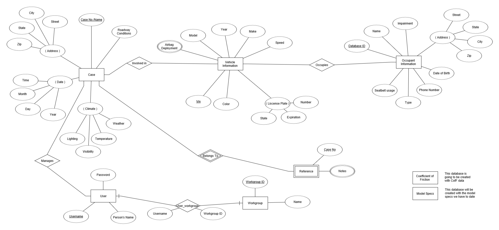

Our cloud database is being created to be used with a mobile and desktop application that are being developed by two other CS Senior Design teams. The purpose of the entire system is for officers and analysts at crash scenes to use the mobile app to document and photograph the scene. These images and information will then be uploaded to our AWS Cloud Database for storage, backup, and easy access. Then, after returning to the office, officers and analysts will then be able to open the desktop CAD application and access the images and documentation from the scene of the incident. Overall, our cloud database will allow a more streamlined crash scene analysis as this work is still done by pencil and paper. This system will also allow data to be sorted in ways that make it easier for system users to not only figure out how and crash occurred but why and how future accidents can be prevented.
To implement our database, we are using an Amazon AWS cloud relational database. We used ER Diagram and Relational Schemas to actually design the database and develop tables, attributes, and their interconnections. Most of the data our customer has is currently stored in Excel type files. As AWS offers software to convert and upload Excel files into their databases this was used in uploading information. In later stages of the product SQL queries will be designed for the initial stages of the mobile and desktop applications to ensure they can properly communicate with the database and send and retrieve information from it.
Entity-Relationship Diagram (ER Diagram)
With our project being a cloud database design project the first thing our group set about doing was designing the overall layout of the database. This consisted of the various tables that are included, the attributes stored within them, and the interconnections (relationships) between tables and their attributes. One of the best ways to do this is to develop an Entity-Relationship Diagram (ER Diagram). After brainstorming our ideas and running them by our customer and what his expectations for the database are, here is our most recent database design in ER Diagram format. As you can see, ER Diagrams are powerful visual aids when it comes to database design as it's easy to see what is contained in the database, and the relationships that make it up.
Relational Schema
After designing the ER Diagram, we then developed a Relational Schema for our database. Relational Schemas are another powerful tool when it comes to database design and layout. They are like ER Diagrams however they are in more of a table format, essentially the way data is stored in the database. Our most recent Relational Schema for our database design can be seen here: